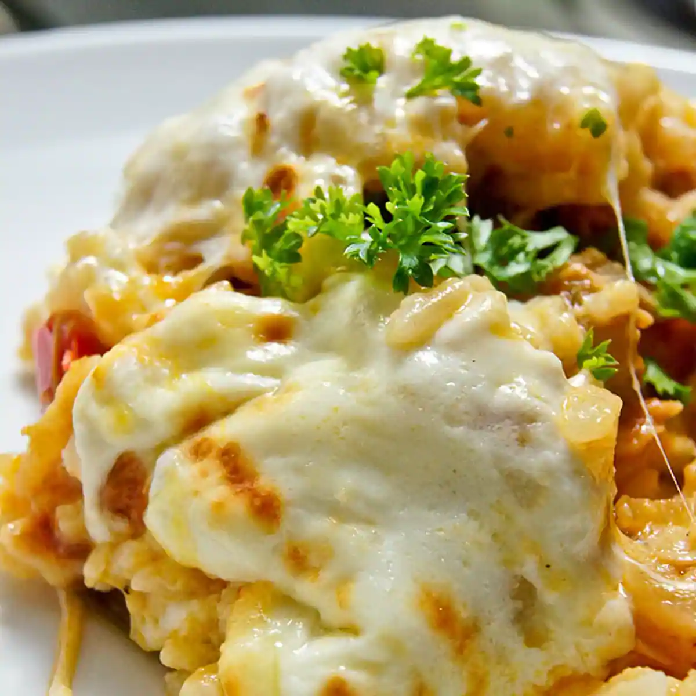

Arroz Imperial
Arroz Imperial is a classic Cuban comfort dish featuring savory yellow rice layered with shredded chicken, creamy mayonnaise, melted cheese, and sweet pimientos.
Ingredients
- 2 lbs chicken breast
- 1 medium yellow onion, finely diced
- 1 green bell pepper, finely diced
- 1 red bell pepper, finely diced
- 4 cloves garlic, minced
- 3 cups long-grain white rice
- 4 cups chicken broth
- 1 packet Sazón with Culeantro y Achiote (or Bijol for yellow color)
- ½ cup tomato sauce
- ½ cup dry white wine or beer
- 1 tsp ground cumin and dried oregano
- 1 cup mayonnaise
- 2.5 cups shredded Mozzarella or Swiss cheese
- ½ cup canned sweet peas (petit pois)
- ½ cup roasted red pimientos, sliced into strips
- Salt and pepper to taste
Steps
- Boil and Shred Chicken: In a large pot, boil the chicken breast in salted water until fully cooked (about 20 minutes). Remove chicken, let cool, shred into bite-sized pieces, and reserve 4 cups of the broth.
- Make the Sofrito: Heat olive oil in a wide pan over medium heat. Sauté the diced onion, green bell pepper, red bell pepper, and minced garlic until soft and fragrant.
- Cook Yellow Rice: Add tomato sauce, wine (or beer), cumin, oregano, sazón, uncooked white rice, and 4 cups of reserved chicken broth to the pan. Bring to a boil, cover, reduce heat to low, and simmer for 20 minutes until the rice is fluffy and yellow.
- Combine Chicken and Rice: Mix the shredded chicken into the cooked yellow rice until evenly distributed throughout the pan.
- Layer the Casserole: In a greased 9×13 baking dish, spread half of the yellow rice and chicken mixture. Spread a smooth, generous layer of mayonnaise over the top, followed by half of the shredded cheese. Repeat with the remaining rice and top with the rest of the cheese.
- Bake and Garnish: Bake at 350°F (175°C) for 15 to 20 minutes until the cheese is completely melted and bubbly. Garnish the top with sweet green peas and pimiento strips before serving warm.